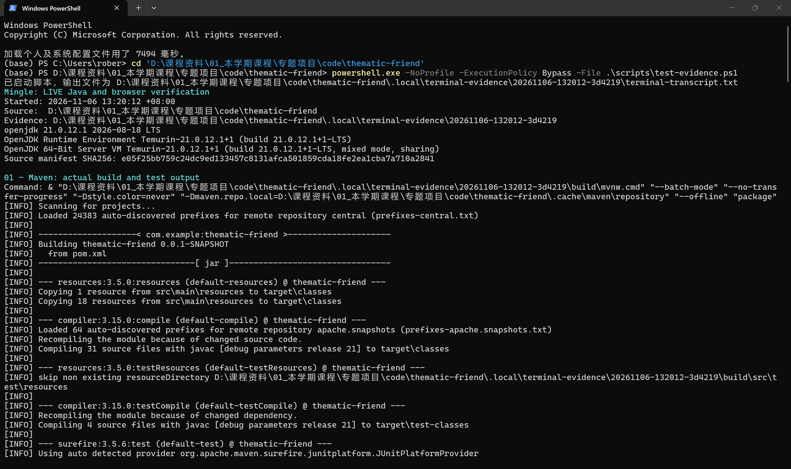
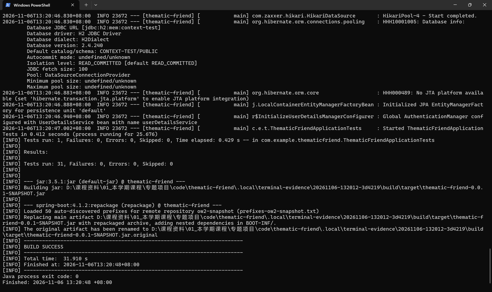
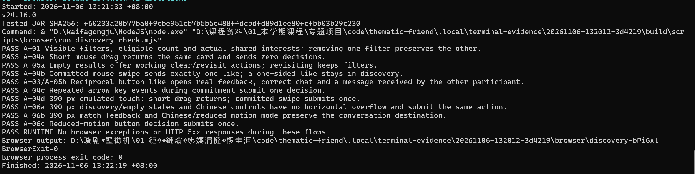
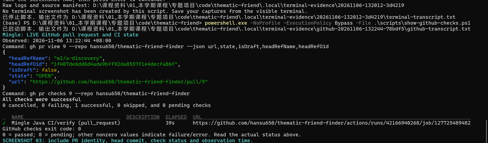
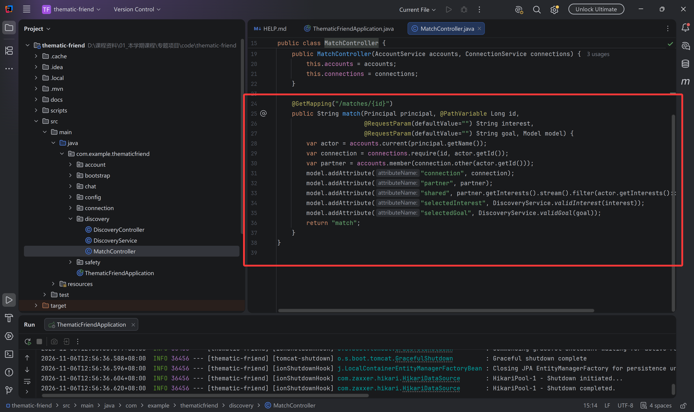
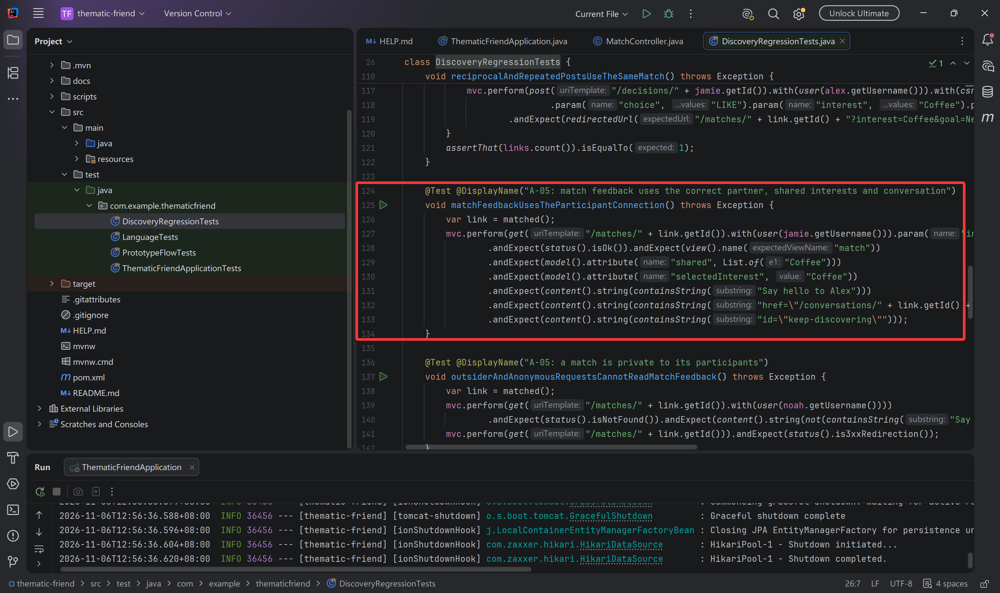

6 November 2026. Branch: w2/a-discovery. PR #9 contains the first discovery increment; independent reviewer B Wang Yikai is pending. The remaining shared contracts, five incoming modules, final acceptance and demonstration coordination are assigned work.
The AI-assisted baseline already supplied accounts/profiles, filtering, mutual matching, basic chat and safety actions. A's increment adds removable filter summaries and eligible counts, useful empty-result recovery and participant-only match feedback leading to the correct conversation. Genuine shared interests come from stored profile intersections.
Local verification passed 31 Java tests (19 retained baseline + 12 new regressions) and 11 browser groups, with exit 0. Qin Tian ran the capture workflow at 13:20–13:22 +08:00 on 6 November. The GitHub capture at 13:22:44 records passing CI for commit 1f407de; it is a snapshot of that observation. See verification scope and browser reproduction. Touch is emulated; independent review is separate.
Command and source identity:

31 tests, BUILD SUCCESS and process exit 0:

11 browser groups, BrowserExit=0 and process exit 0. The original output-path encoding artifact is retained:

PR #9 and actual GitHub checks at capture time:

MatchController.java, lines 24–37, resolves the session user, validates participation, derives the partner/shared interests and renders match feedback.

DiscoveryRegressionTests.java, lines 124–134, checks the expected partner, common interest, retained filter and conversation destination.

Some long lines extend beyond the right edge in the supplied editor screenshots; the linked source files retain the complete statements. All six original PNGs keep their original resolution and bytes. Original-name mapping and hashes. B–F need source/test files and explanations; code screenshots are optional for them.
The largest individual allocation remains A 42 planned hours versus 28 per teammate, including testing, review and coordination. These are estimates, not actual contribution hours. Shared finish line.
Code, tests, capture scripts and documentation used Codex assistance. Qin Tian supplied the six terminal/editor screenshots. B's review, teammate contributions, user observations and later integrations will be recorded when performed.